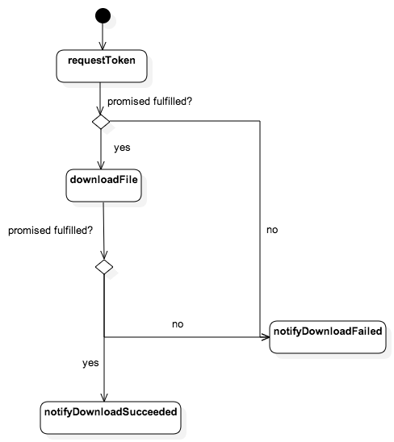

Creado por Enrique Alcántara / @enriquecastl
Senior Javascript Engineer at Crunch.io
Previously Frontend Developer at Codemera
More than 3 years working almost exclusively on designing and implementing large scale SPAs
Algunos enlaces
Twitter @enriquecastl
Github @enriquecastl
¿Por qué?
¿Para qué sirven?
var promise = {
state : 'pending', // Either 'pending' || 'fulfilled' || 'rejected'
then : function(onFulfilled, onRejected, onProgress) {
//Allows to react to a resolved promise
}
}
Reaccionar ante una operación asíncrona
function startDownloadOperation() {
var downloadPromise = downloadFile('file1');
return downloadPromise
.then(notifyDownloadSucceed, notifyDownloadFailed, notifyProgress)
}
function notifyDownloadSucceed(fileContent) {
}
function notifyDownloadFailed(fileContent) {
}
function notifyProgress(){
}
Usando métodos done, catch y progress
function startDownloadOperation() {
var downloadPromise = downloadFile('file1');
return downloadPromise
.then(notifyDownloadSucceed)
.progress(notifyProgress)
.catch(notifyDownloadFailed)
}
function notifyDownloadSucceed(fileContent) {
}
function notifyDownloadFailed(fileContent) {
}
function notifyProgress(){
}
Enlazar promises
function startDownloadOperation(fileURL) {
var tokenPromise = requestToken()
;
tokenPromise
.then(function(token) {
return downloadFile(fileURL, token)
})
.then(notifyDownloadSucceed)
.catch(notifyDownloadFailed)
eventEmitter.emit('download.started', { file : fileURL })
}
Enlazar Promises
Mapping promises
function startDownloadOperation(fileURLs) {
return requestToken()
.then(function(t) {
return Q.all(fileURLs.map(function(file) {
return downloadFile(file, token)
}))
})
.then(notifyDownloadSucceed) // This will be called once all the files are downloaded
.catch(notifyDownloadFailed) // If one of the files could not be downloaded, then catch will be called
//Code hidden to save some space
}
//... not displayed here for space reasons..
Mapping more promises
function startDownloadOperation(fileURLs) {
var token //Notice how we're storing the token in a variable outside the promise's scope
return requestToken()
.then(function(t) {
token = t
return Q.all(fileURLs.map(function(file) {
return downloadFile(file, token)
}))
})
.then(function(files) {
return Q.all(files.map(function(file) {
return downloadMetadata(file.metaURL, token)
}))
})
//Code hidden to save some space
}
//... not displayed here for space reasons..
//... not displayed here for space reasons..
Simplificando con reduce
function startDownloadOperation(fileURLs) {
var token,
files,
metadata
return requestToken()
.then(function(t) {
token = t
return Q.all(fileURLs.map(function(file) {
return downloadFile(file, token)
}))
})
.then(function(f) {
files = f
return Q.all(files.map(function(file) {
return downloadMetadata(file.metaURL, token)
}))
})
.then(function(m) {
metadata = m
return saveDownloadedFilesInfo({
files : files,
metadata : metadata,
downloadToken : token
})
})
.then(notifyDownloadSucceed) // This will be called once all the files are downloaded
.catch(notifyDownloadFailed) // If one of the files could not be downloaded, then catch will be called
//Code hidden to save some space
}
Simplificando con reduce
function reduce(fnDict) {
var accum = {},
keys = Object.keys(fns),
fns = keys.map(function(key) { return fnDict[key] }),
result
;
if(!fns.length) {
result = Q.when(accum)
} else {
result = fns.reduce(function(prev, next, index) {
return prev.then(function(data) {
accum[keys[index]] = data
return next(accum, data)
})
})
}
result
}
Simplificando con reduce
function startDownloadOperation(fileURLs) {
return reduce({
token : requestToken,
files : function(accum, token) {
return Q.all(fileURLs.map(function(file) {
return downloadFile(file, token)
}))
},
metadata : function(accum, files) {
return Q.all(files.map(function(file) {
return downloadMetadata(file.metaURL, accum.token)
}))
},
saveResults : saveDownloadedFilesInfo
})
.then(notifyDownloadSucceed)
.catch(notifyDownloadFailed)
}
Generators for the win!
//writing some code here